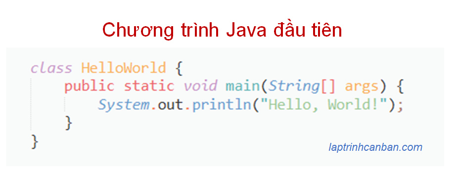
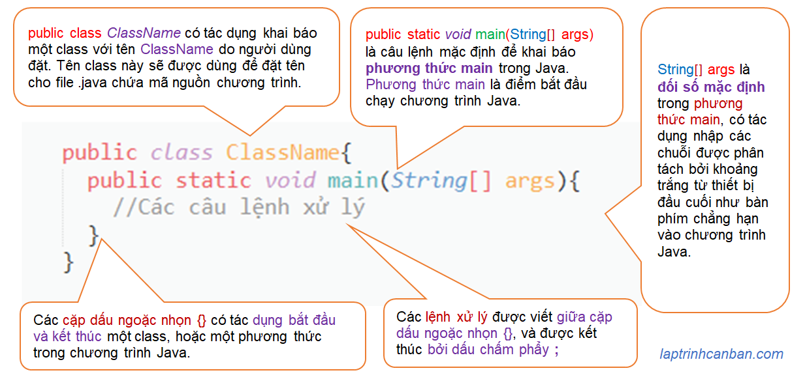
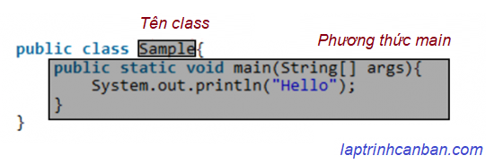
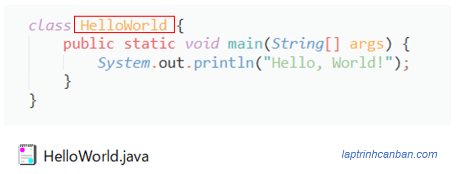
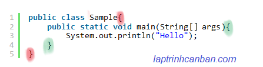

Cùng tìm hiểu về cấu trúc cơ bản và quy tắc viết chương trình Java. Bạn sẽ học được khái niệm chương trình là gì, cấu trúc cơ bản cũng như các quy tắc viết chương trình Java sau bài học này.
Khái niệm chương trình trong Java
Chương trình (computer program) là một tập hợp các xử lý được ghi theo thứ tự mà máy tính cần phải thực hiện. Trong ngôn ngữ Java, một chương trình là một tập hợp các class, với mỗi class là một tập hợp nhằm thực hiện một công việc cụ thể nào đó trong chương trình

Chương trình được viết để cuối cùng tạo ra một ứng dụng (application) nhằm thực hiện một điều gì đó. Một ứng dụng có thể đơn giản hoạt động theo một cách cố định, hoặc nó có thể hoạt động theo nhiều cách khác nhau tùy thuộc vào thao tác của người dùng. Và ứng dụng hoạt động như thế nào hoàn toàn phụ thuộc vào cách bạn viết chương trình mô tả nó.
- Xem thêm: Class, phương thức và trường trong Java
Cấu trúc cơ bản của chương trình Java
Cấu trúc cơ bản của chương trình Java như sau:
public class ClassName{
public static void main(String[] args){
//Các câu lệnh xử lý
}
}
Trong đó, các phần trong cú pháp của Java có ý nghĩa như sau:

- Xem thêm: Phương thức main trong Java
Quy tắc viết chương trình Java
Khi viết chương trình trong Java, chúng ta cần tuân thủ một số các quy tắc nhằm xác định cách thức để viết và dịch trong ngôn ngữ lập trình Java như sau:
- Phải viết tên class và phương thức có trong chương trình.
Các class hay phương thức đều cần phải được đặt tên. Ví dụ như class Sample hay phương thức main chẳng hạn.

- Tên class phải giống với tên file .java lưu mã nguồn
Khi chúng ta lưu mã nguồn chương trình vào một file trên máy tính, tên của file này phải giống với tên class được khai báo trong mã nguồn. Ví dụ nếu tên class là Sample, thì tên file lưu chương trình cũng phải là Sample.java. Lưu ý tên file phải tuân theo quy tắc đặt tên trong Java.

- Bắt đầu các class hoặc phương thức bởi dấu
{và kết thúc bởi dấu}. Nếu đã mở ngoặc đơn{thì phải đóng nó lại bằng ngoặc đơn}.
Các cặp dấu ngoặc nhọn {} có tác dụng bắt đầu và kết thúc một class, hoặc một phương thức trong chương trình Java. Bởi vậy khi đã mở ngoặc đơn thì chúng ta phải đóng nó lại để xác định phạm vi của một class hoặc phương thức.

Kết thúc câu lệnh bằng dấu chấm than
;Sử dụng thụt lề (các khoảng trắng đầu câu lệnh) cũng như xuống dòng để làm cấu trúc chương trình dễ hiểu hơn. Tham khảo: Thụt lề trong Java
Comment có tác dụng giúp người đọc mã nguồn Java dễ hiểu hơn.
Sử dụng ký tự//để comment một dòng lệnh, và cặp dấu/*và*/để comment nhiều dòng lệnh. Tham khảo: Comment trong Java.
Các quy tắc viết comment trong Java cơ bản sau đây:
- Chỉ viết comment khi cần thiết, không viết thông tin thừa
- Viết comment trước hàm và biến global
- Nội dung comment phải đúng và không mâu thuẫn với code
- Viết comment rõ ràng dễ hiểu, không gây loạn cho người đọc
Quy tắc đặt tên trong java
Trong Java quy định rất rõ ràng về cách đặt tên các đối tượng có trong chương trình.
Quy tắc đặt tên chung trong java
- JAVA phân biệt chữ hoa chữ thường.
- Các tệp, lớp, phương thức, biến, v.v. phải được đặt tên theo ý nghĩa và mục đích.
- Tránh các tên chỉ có một hoặc quá nhiều ký tự
- Không sử dụng các tên tương tự để đặt tên. Ví dụ persistentObject và persistentObjects không nên được sử dụng trong cùng một class
- Không sử dụng tên khó hiểu và gây hiểu lầm.
- Không sử dụng tên đa ngôn ngữ (tiếng Anh + tiếng Nhật, v.v.). Ví dụ: addtinhtoan …
- Không sử dụng các từ khóa (keyword) của JAVA để đặt tên.
- Không đặt tên bắt đầu từ số. Ví dụ, 123student …
- Không đặt tên bao gồm dấu cách và ký hiệu toán học.
Quy tắc đặt tên biến trong Java
- Đặt tên theo quy tắc Camelcase: Viết chữ cái đầu tiên của tên biến bằng chữ thường và chữ cái đầu tiên của các từ tiếp theo bằng chữ hoa. Ví dụ, studentNumber …
- Ghi tên kiểu dữ liệu vào tên biến. Ví dụ: studentList cho kiểu List, studentArray cho kiểu Mảng …
Quy tắc đặt hằng số trong Java
- Tuân theo các quy tắc đặt tên chung.
- Viết hoa tất cả các chữ cái và dùng gạch dưới
_để kết nối. Ví dụ: FIBONACCI_NUMBER
Quy tắc đặt phương thức (method) trong Java
- Tuân theo các quy tắc chung.
- Đặt tên nó theo quy tắc CamelCase, giống như tên biến. Ví dụ, countStudent …
Quy tắc đặt class (lớp) và Interface (giao diện) trong Java
- Tuân theo các quy tắc chung, và đặt tên cho tất cả các từ trong tên bằng chữ in hoa. Ví dụ, CountStudent …
- Từ cuối cùng trong tên class được sử dụng để mô tả đặc điểm và kiểu của class. Ví dụ: DivZeroException (Lớp ngoại lệ trong xử lý try-catch)
- Chữ cái đầu tiên của Interface (giao diện) phải được viết hoa. Ví dụ, IFrame …
- Từ đầu tiên bắt đầu một lớp trừu tượng (Abstract class) phải là Abstract. Ví dụ, AbstractCountStudent …
Quy tắc đặt tên Package (gói) trong Java
- Tuân theo các quy tắc chung.
- Viết bằng tất cả chữ thường
Quy tắc đặt tên Project (dự án) trong Java
- Tuân theo các quy tắc chung.
- Viết phần đầu của tất cả các từ trong tên bằng chữ in hoa. Ví dụ SinhVienProject…
Nguồn tham khảo: it.schoolbig.com
Ví dụ chương trình trong Java
Trong ngôn ngữ Java, một ứng dụng có thể rất đơn giản, và cũng có thể cực kỳ phức tạp tùy theo quy mô của ứng dụng đó. Và dựa vào quy mô của ứng dụng cần tạo mà cấu trúc của chương trình trong Java cũng có thể rất đơn giản hoặc là cực kỳ phức tạp.
Tuy nhiên, tất cả các chương trình trong Java đều cần được viết theo một quy tắc chung và nhất quán mà Kiyoshi đã hướng dẫn ở trên. Ví dụ như chương trình Hello World trong Java sau đây:
public class Sample{ |
Đây là Chương trình Java đầu tiên vỡ lòng và đơn giản nhất mà hầu như tất cả các bạn học lập trình đều học qua. Và ai cũng biết rằng sau khi compile và chạy chương trình Java này thì dòng chữ Hello World! sẽ được in ra màn hình như sau:
Hello World! |
Hãy xem một ví dụ phức tạp hơn về một chương trình kiểm tra pin của một máy tính như sau:
public class Computer { |
Sau khi compile và chạy chương trình trên, các dòng chữ sẽ được in lần lượt ra màn hình như sau:
Constructor of Computer class. |
Bạn có thể thấy mặc dù chương trình thứ 2 có cấu trúc phức tạp hơn chương trình Hello World rất nhiều, nhưng chúng đều được viết tuân theo một cấu trúc chung mà thôi.
public class ClassName{ |
Giống như trên, một chương trình trong Java dù có phức tạp đến mấy thì nó cũng chỉ thực hiện một cách chính xác theo những lệnh chúng ta viết mà thôi. Nói cách khác, chỉ cần chúng ta nắm được các quy tắc cơ bản khi viết chương trình Java, thì bằng cách viết lần lượt các lệnh với nhau, chúng ta cũng có thể viết ra được các ứng dụng phức tạp nhất bằng ngôn ngữ Java.
Tổng kết
Trên đây Kiyoshi đã hướng dẫn bạn về cấu trúc cơ bản và quy tắc viết chương trình Java rồi. Để nắm rõ nội dung bài học hơn, bạn hãy thực hành với các ví dụ sau đây.
Và hãy cùng tìm hiểu những kiến thức sâu hơn về Java trong các bài học tiếp theo nhé.
URL Link
HOME › java cơ bản cho người mới bắt đầu>>04. kiến thức cơ bản về java